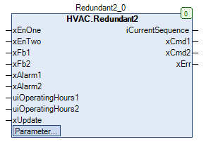

Redundant2 (FB)¶
FUNCTION_BLOCK Redundant2
Short Descritpion¶
Redundant control of two devices similar in typeInfluencing factors: requirements, operating hours, operating and fault statesTypical application: Definition of the lead and follower pump
Portrayal¶

Interfaces¶
Inputs¶
Name Datatype
Range
Init-Value
Function
xEnOne BOOL Requirement - lead device
xEnTwo BOOL Requirement - Lead and follower device
xFb1 BOOL Operation - Device 1
xFb2 BOOL Operation - Device 2
xAlarm1 BOOL Fault - Device 1
xAlarm2 BOOL Fault - Device 2
uiOperatingHours1 UDINT Operating hours - Device 1
uiOperatingHours2 UDINT Operating hours - Device 2
xUpdate BOOL Enable - sequence control after operating hours
Outputs¶
Name Datatype
Range
Init-Value
Function
iCurrentSequence INT Current device sequence
xCmd1 BOOL Enable - Device 1
xCmd2 BOOL Enable - Device 2
xErr BOOL Fault output
Setpoints / Parameters¶
Name Datatype
Range
Init-Value
Function
xConOperatingHours BOOL TRUE Enable - Follower device after Operation hours
xEnFb BOOL TRUE Enable - Use of the operation messages
wTolerance WORD 100 Limit value - Operating hours difference
Functional Description¶
General¶
xEnOne and xEnTwo requirements¶
xEnOne xEnTwo Lead device
Follower device
Notes
FALSE FALSE FALSE FALSE No requirement
TRUE FALSE TRUE FALSE Requirement - lead device
X TRUE TRUE TRUE Requirement - Lead and follower device
Fault output xErr¶
xEnOne xEnTwo xAlarm1 xAlarm2 xErr Notes
TRUE X TRUE TRUE TRUE Requirement - Lead device and both devices are faulty
X TRUE TRUE X TRUE Requirement - Lead device and follower device and at least one device is faulty
X TRUE X TRUE TRUE Requirement - Lead device and follower device and at least one device is faulty
Output iCurrentSequence¶
Setpoint / Parameter xConOperatingHours¶
Setpoint / Parameter xEnFb¶
Setpoint / Parameter wTolerance¶
Determination of the lead and follower device¶
High priority switching over depending on the fault status of devices 1 and 2
xAlarm1 xAlarm2 Lead device
Follower device
Notes
FALSE FALSE not influenced
not influenced
Both devices without fault
TRUE FALSE Device 2
Device 1
Device 1 faulty
X TRUE Device 1
Device 2
Device 2 faulty
Low priority switching over depending on the operating hours, operating messages (xEnFb = TRUE)
A re-evaluation and definition with low priority can be triggered in each case as follows:
xConOperatingHours = TRUE and / or rising edge at the xUpdate input
xConOperatingHours xUpdate Conditions
Lead device
FALSE FALSE, TRUE, H/L No re-evaluation
TRUE FALSE, TRUE, H/L Identical operating messages (xEnFb = TRUE) or identical enable outputs (xEnFb = FALSE) of the devices
Device with fewer operating hours
TRUE FALSE, TRUE, H/L One device in operation (xEnFb = TRUE) or one device enabled (xEnFb = FALSE)
Change to the device with a lower number of operating hours, if the difference in operating hours > wTolerance.
FALSE L/H uiOperatingHours1 = uiOperatingHours2 = 0 (No operating hours available)
Change of the lead device with the follower device
FALSE L/H uiOperatingHours1 or uiOperatingHours2 > 0
Device with fewer operating hours
Device outputs xCmd1 and xCmd2¶
The device outputs are finally defined as follows:
Lead device = Device 1
xCmd1 = TRUE: The lead device is requested and at least one device is requested and device 1 is not disturbed
xCmd2 = TRUE: The lead device is requested and at least one device is requested and device 2 is not disturbed
Lead device = Device 2
xCmd1 = TRUE: The follower device is requested and at least one device is requested and device 1 is not disturbed
xCmd1 = TRUE: The lead device is requested and at least one device is requested and device 2 is not disturbed
Visualization¶
Information¶
Element Authors
Date
Version Notes
Function
Adam Bartod 09.2016 1.0 Initial version
Programming
Adam Bartod 09.2016 1.0 Initial version
Test Jochen Reu 10.2017 1.0 Initial version
Documentation
Jochen Reu 10.2017 1.0 Initial version
Codesys¶
- InOut:
Scope Name Type Initial Comment Input xEnOne BOOL Requirement - lead device
xEnTwo BOOL Requirement - Lead/follower device
xFb1 BOOL Operation - Device 1
xFb2 BOOL Operation - Device 2
xAlarm1 BOOL Fault - Device 1
xAlarm2 BOOL Fault - Device 2
uiOperatingHours1 UDINT Operating hours - Device 1
uiOperatingHours2 UDINT Operating hours - Device 2
xUpdate BOOL Comparison of operating hours at edge
xConOperatingHours BOOL TRUE Enable - continuous comparison of operating hours
xEnFb BOOL TRUE Use of FALSE = Enable; TRUE = Operating message
wTolerance WORD 100 Limit value - operating hours difference for direct sequence change when only one device is in operation
Output iCurrentSequence INT Current device sequence
xCmd1 BOOL Enable - Device 1
xCmd2 BOOL Enable - Device 2
xErr BOOL Fault output